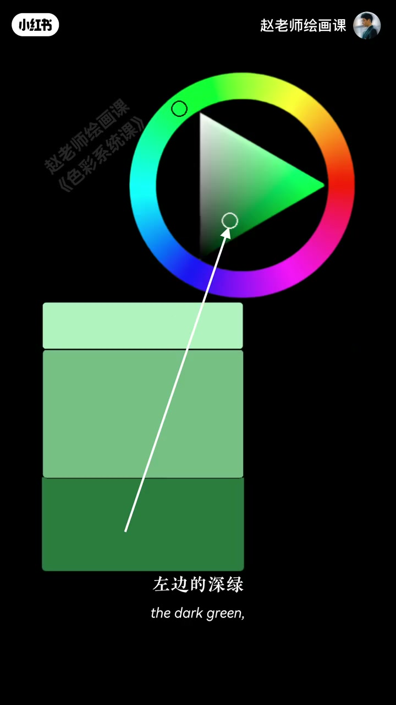
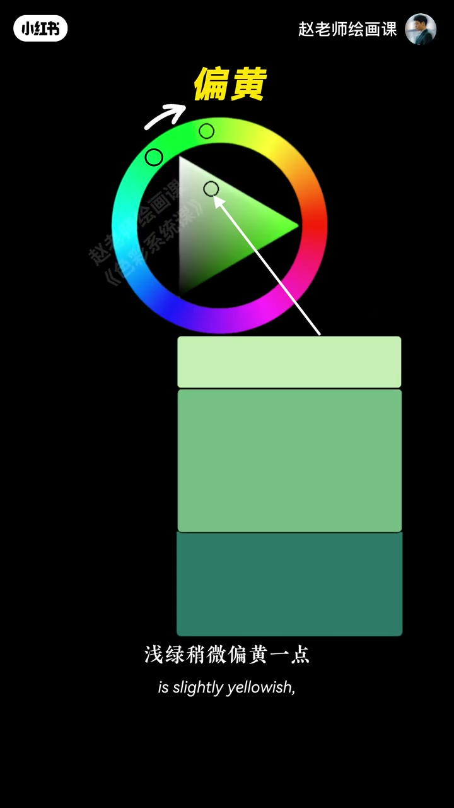
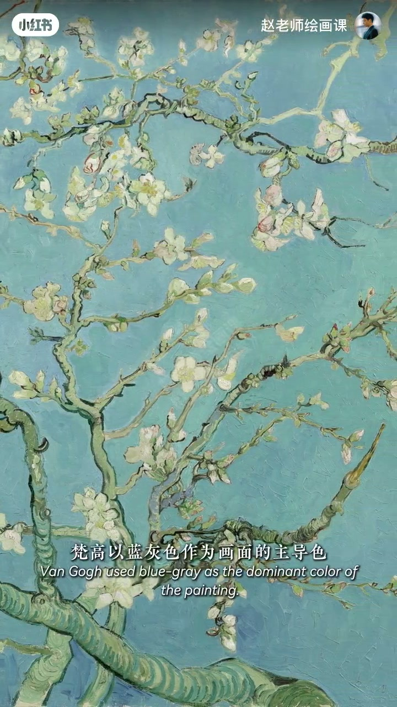
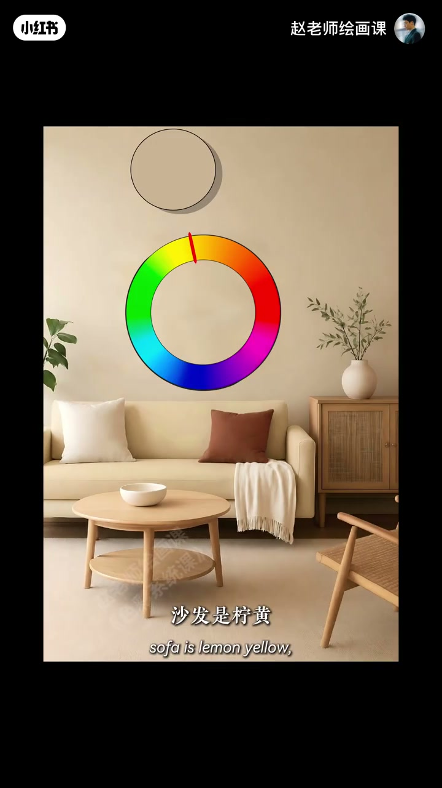

内容要点
绿调测验：同相的深绿中绿浅绿显单调；浅绿偏黄、深绿偏蓝后变成三种色，立刻丰富——色相偏移。梵高杏花以蓝灰为主导，向左偏出蓝绿树枝、向右偏出蓝紫天空，统一又鲜活；去掉偏移瞬间失生机。奶油风软装同理：全米黄沉闷，灰黄墙、嫩黄沙发、家具偏橙、抱枕偏红仍在暖色系却微妙偏移。口令：同色调不等于同色相。
知识结构
同相绿单调；偏黄／偏蓝后更丰富＝色相偏移。
蓝主导左右偏移；去掉偏移失生机。
全米黄闷；微妙偏移立刻丰富；同色调≠同色相。
统一靠色调家族，耐看靠家族内的色相微偏；同色调绝不是把色相锁死成同一个。
00:00-00:34绿调小测验：同相 vs 偏移
色感测验：都是绿调，哪组更好看？选右边的色感不错。左深绿中绿浅绿都是一种绿；右浅绿稍偏黄、深绿稍偏蓝，其实是三种颜色，当然更丰富好看。原理叫色相偏移。
00:15 同相三绿带；00:22 顶栏「偏黄」与色环偏移是证据。


00:34-01:05梵高杏花：主导色上的左右偏移
梵高以蓝灰色作画面主导，其他颜色都从这蓝出发：往左偏移得蓝绿树枝，往右偏移得天空蓝紫，故既统一又鲜活。去掉这种偏移效果，杏花瞬间失去生机。
00:40 蓝灰底上的杏花局部对应「主导色」口播。

01:05-01:43奶油风：记住同色调≠同色相
软装同理：墙、沙发、桌子全米黄，沉闷乏味。高级搭配是墙面灰黄、沙发嫩黄、家具偏橙一点、抱枕偏红一点——整体仍暖色系，却有微妙色相偏移，画面立刻丰富。
只要记住：同色调不等于同色相。01:22 室内取样圆钉在沙发黄相上。

完整转录（55段）
以下文本由 Whisper medium 模型自动转录，可能存在少量识别误差，已尽可能修正。
色感小测验
都是绿调的搭配
哪一组更好看
选择右边的同学
恭喜你
你的色感不错
那为什么右边的好看一些呢
你看啊
左边的深绿 中绿 浅绿
都是一种绿色
而右边呢
浅绿稍微偏黄一点
深绿呢稍微偏蓝一点
你看右边啊
其实是三种颜色
你当然觉得它更丰富好看了
这个原理啊
就叫色相偏移
来看樊高的行花
樊高以蓝灰色
作为画面的主导色
其他的颜色
都从这个蓝来出发
蓝色往左偏移
得到了蓝绿色的树枝
往右偏移
得到了天空的蓝紫色
所以画面既统一
又鲜活
不信
我们去掉这种偏移的效果
你看杏花瞬间失去了生机
不止绘画
软装搭配中啊
也是一样的原理
来看这组奶油风的搭配
墙是米黄
沙发是米黄
桌子还是米黄
感觉有点沉闷和乏味
真正高级的搭配
你看墙面是灰黄
沙发是凝黄
家具偏长一点
抱枕则是偏红一点
整体还是暖色系
但颜色之间
产生了微妙的色相偏移
画面立刻丰富起来了
所以你只要记住这一句话
同色调不等于同色相
你学会了吗
关注赵老师
教你用底层原理
真正保人传色彩